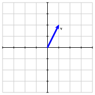

Print preview
Worksheet \(\S 4.1\text{:}\) Introduction to Eigenvectors and Eigenvalues (Solutions)
2. Preview Activity 4.1.1.
Before we introduce the definition of eigenvectors and eigenvalues, it will be helpful to remember some ideas we have seen previously.
(a)
Suppose that \(\vvec\) is the vector shown in the figure. Sketch the vector \(2\vvec\) and the vector \(-\vvec\text{.}\)

(b)
State the geometric effect that scalar multiplication has on the vector \(\vvec\text{.}\) Then sketch all the vectors of the form \(\lambda \vvec\) where \(\lambda\) is a scalar.
(c)
State the geometric effect of the matrix transformation defined by
\begin{equation*}
\left[\begin{array}{rr}
3 \amp 0 \\
0 \amp -1 \\
\end{array}\right]\text{.}
\end{equation*}
(d)
Suppose that \(A\) is a \(2\times 2\) matrix and that \(\vvec_1\) and \(\vvec_2\) are vectors such that
\begin{equation*}
A\vvec_1 = 3 \vvec_1, \qquad A\vvec_2 = -\vvec_2\text{.}
\end{equation*}
Use the linearity of matrix multiplication to express the following vectors in terms of \(\vvec_1\) and \(\vvec_2\text{.}\)
-
\(A(4\vvec_1)\text{.}\)
-
\(A(\vvec_1 + \vvec_2)\text{.}\)
-
\(A(4\vvec_1 -3\vvec_2)\text{.}\)
-
\(A^2\vvec_1\text{.}\)
-
\(A^2(4\vvec_1 - 3\vvec_2)\text{.}\)
-
\(A^4\vvec_1\text{.}\)
Solution.
Applying linearity, we see that
-
\(A(4\vvec_1) = 4A\vvec_1 = 12\vvec_1\text{.}\)
-
\(A(\vvec_1+\vvec_2) = A\vvec_1 + A\vvec_2 = 3\vvec_1 - \vvec_2\text{.}\)
-
\(A(4\vvec_1-3\vvec_2) = 4A\vvec_1 -3A\vvec_2 = 12\vvec_1 + 3\vvec_2\text{.}\)
-
\(A^2\vvec_1 = A(3\vvec_1) = 9\vvec_1\text{.}\)
-
\(A^2(4\vvec_1-3\vvec_2) = A(12\vvec_1 +3\vvec_2) = 36\vvec_1 - 3\vvec_2\text{.}\)
-
\(A^4\vvec_1 = 3^4\vvec_1 = 81\vvec_1\text{.}\)
3. Definition: Eigenvector and Eigenvalue.
Given a square matrix \(A\text{,}\) a non-zero vector \(\vvec\) is an eigenvector if there is a scalar \(\lambda \) such that
4. Example: Eigenvector and Eigenvalue.
Let \(A = \left[\begin{array}{rr}
7 \amp 6 \\
6 \amp -2 \\
\end{array}\right]\) and \(\vvec=\twovec{2}{1}\text{.}\)
Solution.
See Example 4.1.2.
5. Activity: Geometric Interpretation of Eigenvectors.
This definition has an important geometric interpretation that we will investigate here.
-
Suppose that \(\vvec\) is a nonzero vector and that \(\lambda\) is a scalar. What is the geometric relationship between \(\vvec\) and \(\lambda\vvec\text{?}\)
-
Let’s now consider the eigenvector condition: \(A\vvec = \lambda\vvec\text{.}\) Here we have two vectors, \(\vvec\) and \(A\vvec\text{.}\) If \(A\vvec = \lambda\vvec\text{,}\) what is the geometric relationship between \(\vvec\) and \(A\vvec\text{?}\)
-
Use the interactive diagram that accompanies this activity.Choose the matrix \(A= \left[\begin{array}{rr} 1\amp 2 \\ 2\amp 1 \\ \end{array}\right] \text{.}\) Move the vector \(\vvec\) so that the eigenvector condition holds. What is the eigenvector \(\vvec\) and what is the associated eigenvalue?
-
By algebraically computing \(A\vvec\text{,}\) verify that the eigenvector condition holds for the vector \(\vvec\) that you found.
-
If you multiply the eigenvector \(\vvec\) that you found by \(2\text{,}\) do you still have an eigenvector? If so, what is the associated eigenvalue?
-
Are you able to find another eigenvector \(\vvec\) that is not a scalar multiple of the first one that you found? If so, what is the eigenvector and what is the associated eigenvalue?
-
Now consider the matrix \(A = \left[\begin{array}{rr} 2 \amp 1 \\ 0 \amp 2 \\ \end{array}\right] \text{.}\) Use the diagram to describe any eigenvectors and associated eigenvalues.
-
Finally, consider the matrix \(A = \left[\begin{array}{rr} 0 \amp -1 \\ 1 \amp 0 \\ \end{array}\right] \text{.}\) Use the diagram to describe any eigenvectors and associated eigenvalues. What geometric transformation does this matrix perform on vectors? How does this explain the presence of any eigenvectors?
Solution.
-
There are many possibilities, but we see that \(\twovec{1}{1}\) is an eigenvector with associated eigenvalue \(\lambda=3\text{.}\)
-
If we perform the matrix multiplication, we see that \(A\twovec{1}{1} = \twovec{3}{3} = 3\twovec{1}{1}\text{.}\)
-
The only eigenvectors that appear are scalar multiples of \(\twovec{1}{0}\) with associated eigenvalue \(\lambda=2\text{.}\)
-
There are no eigenvectors. The matrix transformation rotates vectors by \(90^\circ\) so it is not possible for \(\vvec\) and \(A\vvec\) to lie on the same line.
6. Making Connections.
\begin{equation*}
A \vvec = \lambda \vvec
\end{equation*}
Solution.
The general idea is that recognizing eigenvectors of a matrix can turn a difficult computation (\(A \vvec\)) into an easy one (\(\lambda \vvec\)). There will be a couple of important contexts that we will explore involving eigenvectors:
-
Determining if we can form a basis consisting of eigenvectors of a matrix.
-
Analyzing Dynamical Systems (such as in Lab 2).
See the discussion and examples in Subsection 4.1.2.